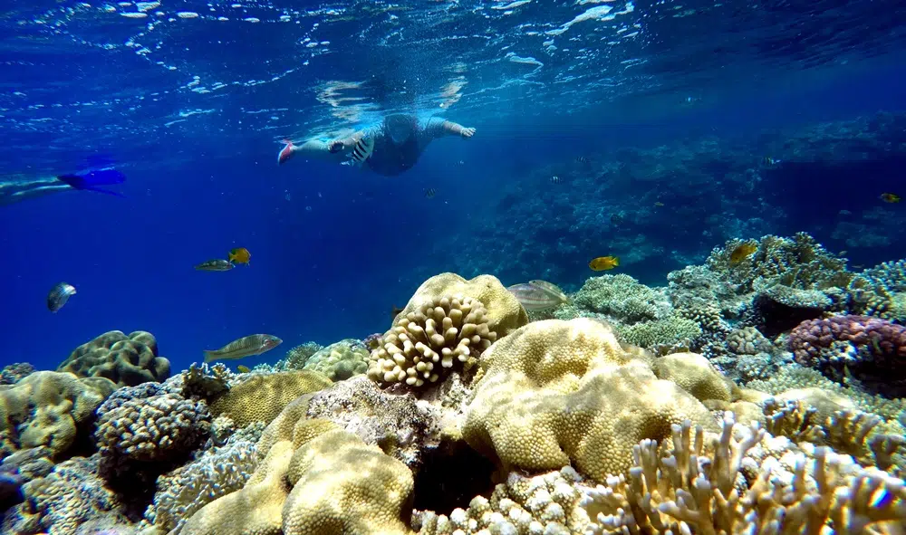
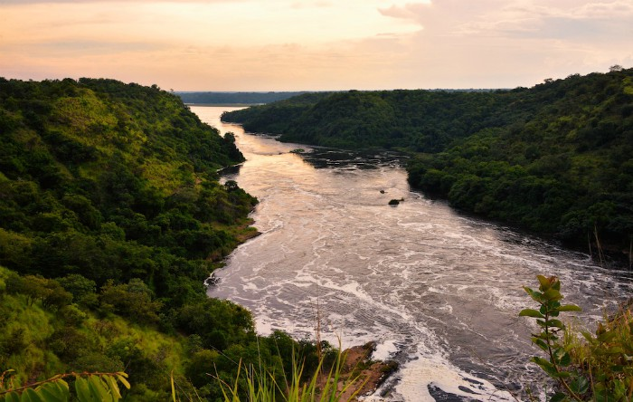
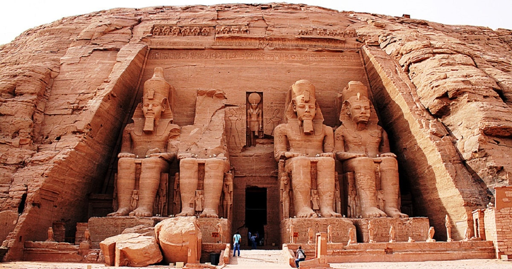

Obiective turistice in Egipt
Lucruri de făcut în Hurghada
Hurghada este cea mai veche și cea mai renumită stațiune și atracție turistică din Egipt.
Experimentează plajele din stațiunile de la malul mării, care se întind de-a lungul coastei, atât la nord, cât și la sud de oraș. Te poți bucura aici de nisipul alb al Mării Roșii și de cele mai bune hoteluri.
Hurghada este renumită pentru oportunitățile excelente de scufundări.
Dacă ești pasionat de aceste activități sau vrei să încerci ceva nou, scufundările te vor ajuta să descoperi recife de corali superbi și plini de culoare. Una dintre principalele destinații de scufundări este Strâmtoarea Gubal, o fâșie îngustă de apă situată între coasta Mării Roșii și țărmul vestic al Peninsulei Sinai. Alte sporturi nautice, precum snorkelingul, windsurfingul și jet-skiingul, sunt la fel de populare și iubite de pasionații de senzații tari.

Lucruri de facut in Sharm el Sheik
Golful Namaa reprezintă nucleul tuturor acțiunilor din Sharm el Sheik.
Aici te poți relaxa la soare sau te poți pierde prin numeroasele magazine, restaurante și cafenele. Golful este recunoscut pentru stațiunile sale de lux, de aceea reprezintă alegerea de top când vine vorba de destinațiile turistice din Egipt. La nord de Namaa, poți explora minunățiile Golfului Shark’s Bay, un tărâm luxos, plin de hoteluri de cinci stele, restaurante și cafenele de top.
În Sharm el Sheik te poți bucura și de înot sau snorkeling, stațiunea având ceva pentru fiecare iubitor de aventură.
Top cele mai renumite plaje
Turismul Egiptului a devenit cunoscut pentru piramidele și artefactele sale antice;
Stațiunile de pe litoral se află în plin avânt și continuă să aducă din ce în ce mai mulți turiști an de an. Dacă vrei să descoperi frumusețea naturală a acestei țări uimitoare, iată care sunt cele mai bune plaje din Egipt.
Namaa Bay – se afla in Sharm el Sheik, in Peninsula Sinai. Este alegerea de top pentru o escapada la plaja, combinata cu putina distractie si aventura subacvatica.
Laguna Dahab – acesta fasie de nisip auriu este o destinatie importanta pentru kitesurfing, sporturi nautice, dar si pentru cei care cauta o vacanta in care sa leneveasca la soare.
El Gouna – este situat la 27 de kilometri de Hurghada si a fost special conceput pentru vacante relaxante, de petrecut impreuna cu familia.
Plaja Ras Um Sid – este o fasie de nisip din zona Sharm el Sheik si un loc ideal pentru plaja sau snorkeling. Daca ajungi aici, mergi neaparat in cafeneaua Farsha Café, situata in varful stancii, unde te vei bucura de o vedere panoramica si un superb apus de soare.
Taba – este situat langa punctul de trecere a frontierei egiptene cu Israelul. Din Taba Heights fac parte cateva statiuni all inclusive, perfecte pentru familii si vacante relaxante la plaja.
Top atracții turistice in Egipt din antichitate
Piramidele din Giza

Marea Piramidă din Giza (numită și piramida lui Keops sau Marea Piramidă din Gizeh) este localizată pe Platoul Gizeh - orașul Gizeh, necropola anticului Memphis, actualmente parte a capitalei Cairo.
Aceasta este singura minune a lumii care nu necesită descrieri ale istoricilor din antichitate sau ale poeților. Este singura minune a lumii asupra căreia nu se fac speculații referitoare la formă, mărime și prezentare. Este cea mai veche și totuși singura care a supraviețuit timpului. Contrar părerii generale, numai Marea Piramidă a lui Keops, nu toate cele trei Mari Piramide, se află pe lista celor șapte minuni ale lumii antice.
Raul Nil, inima Egiptului

Este cel mai lung fluviu din lume, străbate mai multe țări ca oricare alt fluviu și a permis dezvoltarea uneia dintre cele mai importante și mai influente civilizaţii din istoria omenirii. În același timp, importanța sa istorică, culturală și ecologică sunt de necontestat, Nilul fiind o adevărată comoară naturală nu doar a Africii, ci și a întregii lumi. De la istoria de mii de ani și cultura sa bogată până la rolul vital pe care îl are în ecologia și economia continentului, Nilul a fost și continuă să fie un simbol al vieții și al prosperității pentru milioane de oameni.
Abu Simbel, complexul de temple antice

Templele de la Abu Simbel sunt unele dintre cele mai impresionante monumente din Egipt, situate în sudul țării, în apropierea regiunii Aswan. Aceste temple au fost comandate și construite în timpul domniei faraonului Ramses al II-lea, în secolul al XIII-lea î.Hr. Scopul principal al construcției lor a fost să comemoreze victoria în bătălia de la Kadesh și să consolideze autoritatea Egiptului asupra Nubiei.
Arhitectura și caracteristicile templelor de la Abu Simbel sunt remarcabile și reflectă măreția și puterea faraonului Ramses al II-lea. Fațadele templelor sunt decorate cu statui colosale ale lui Ramses al II-lea, ale uneia dintre soțiile sale preferate, Nefertari, și ale copiilor săi.
Interiorul templelor este la fel de impresionant, fiind decorat cu inscripții care prezintă viața și realizările faraonului, precum și scene care ilustrează diverse ritualuri religioase. Aceste inscripții oferă o imagine detaliată a societății și culturii egiptene din acea perioadă și reprezintă o sursă valoroasă de informații despre istoria antică a Egiptului.